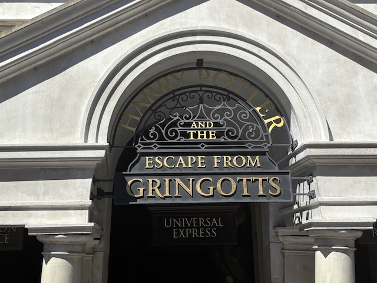
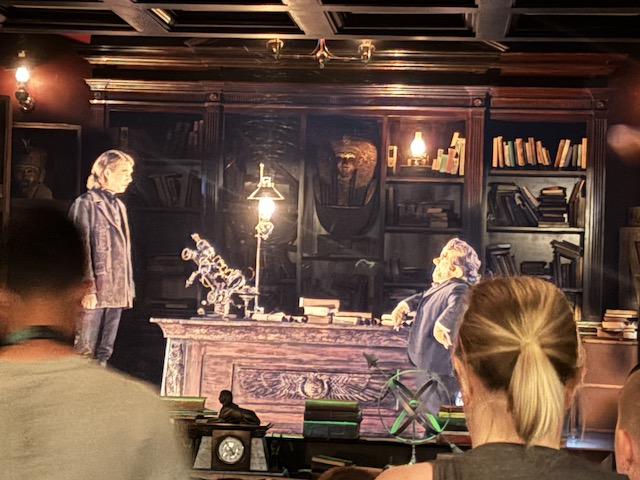
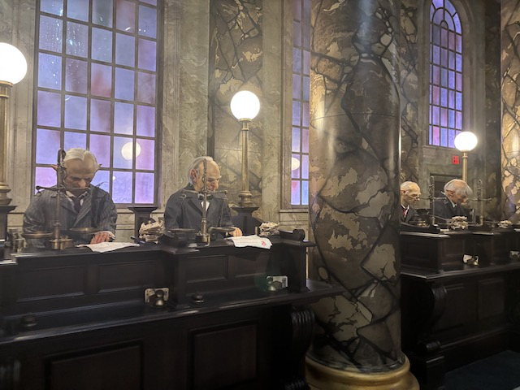
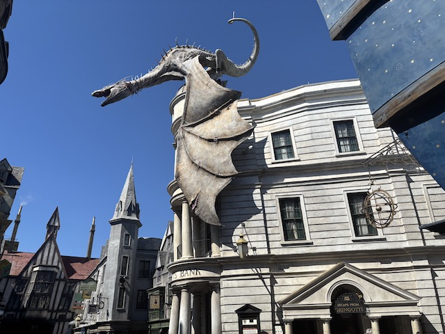

| |
Harry Potter and the Escape from Gringotts Review

Today, we'll be reviewing Harry Potter and the Escape from Gringotts @ Universal Studios Florida, within the Universal Orlando Resort. Now that name is too long, so I'll be calling it Escape from Gringotts for the sake of simplicity. This is.....an interesring ride. Mainky in the sense that this is one of those dark ride/roller coaster hybrids. And 99% of the time, those just flat out don't count (looking at you, Blazing Fury & Fire in the Hole). There's the Underground @ Adventureland, which.....honestly, only counts as a credit because I already added it and removing it would f*ck up my whole list and orderings up. And then there's Escape from Gringotts. When I first heard of this ride, I declared it to be "NOT A CREDIT!!!" and ignored it. But shortly before I returned to Florida, one friend asked me about it, and.....he actually made a decent case. So I rode it with an open mind, and.....it counts. The coaster section is actually a coaster section. It's not a dark ride with a drop like Blazing Fury & Fire in the Hole. And it's a good thing too, cause this wound up being Credit #700 for me (if this didn't count, then #700 would've been the Trollercoaster). And yeah. This is a really fun ride. After exploring Gringotts and seeing the goblins (the line for tgis ride is actually really cool), we then reach the cars, pull down the lap bar, and we're off! We head around a turn. It's kind of fast, just strolling along until we stop. We're at a screen, showing off different blocked off rail paths in Gringotts. One of the goblins seems to cast a spell before we lean foreward, and drop into the coaster section. Yeah. This definately counts. It's hard to say exactly it is, but it surely has a drop and some turns. Also, fun fact. You know that lean? That technically is tilt track. Meaning Escape from Gringotts technically was my first tilt coaster. Damn, and I thought it was either gonna be Circuit Breaker @ Cotaland or Sirens Curse @ Cedar Point, depending on whether I return to Texas or Ohio first (Leaning TX, but anything can happen). Anyways, the first coaster section ends and we see more of the Goblins. Harry Potter and his friends also show up, since I guess they're trying to escape from Gringotts as well. But then some......creatures (I may not be a huge Potterhead, but I don't recognize these from any of the books or movies). We then go through a launch, only to stop right in front of another screen. Those same people attack us, until the bridge their on collapses. We then fall. Except not really. Now it's less of a roller coaster and the drop is far more reminiscent of that on Spiderman, which while an amazing simulator, still is a simulator at the end of the day. We're saved by a Gringotts employee, except....he's promptly attacked by a dragon. Well that worked out for us. Luckily, the dragon doesn't hurt uds, only breathing fire to heat us up and spraying us with a nice misting. The dude gets us to float by casting the floating spell. We then turn around, and launch to another screen. Yeah. This is definately the dark ride portion. We see one bank goblin panicking, before the walls crumble and oh look. Gringotts has been taken over by Voldemort and the chick who killed Sirius Black (Bellatrix Lestrange). They demand we tell the location of Harry Potter since we saw him. *Sigh* Just go away, dude! I'm not here to fight ypur dirty battles. Bellatrix then attacks us for being Muggleborn. Gee, what a hateful bitch. I think I know a certain political movement in this disgraceful country that would welcome her and Voldemort with open arms. Speaking of which, we launch to the next room. Where.....now Voldemort is attacking us. Well this now sucks. Luckily, Harry Potter and his friends save us. We then drop into a coaster section. Just as a reminder that this actually is a credit and not a dark ride. We end in front of a screen, where someone FINALLY asks if we're all right. Yes, though we were attacked by Voldemort. So.....yeah. That was Escape from Gringotts. And....it's just a fun ride. If you're a Harry Potter, fan, you will enjoy this ride. It may not be an amazing coaster, but it's just an overall fun ride.
7/10
Location: Universal Orlando Resort (Universal Studios Florida)
Opened: 2014
Built by: Intamin
Credit #700
Last Ridden: August 16, 2025
Harry Potter and the Escape from Gringotts Photos



Home
|